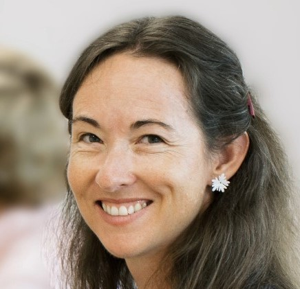

Annie Sisk
Loving spouse. Accomplished professional. Avid explorer.
My professional experience ranges from Java Developer to Customer Experience Consultant and I've led teams of developers and consultants. I also have experience in professional services contracting and sales.
I'm currently attending Montana State University as a post-bacc studying Computer Science, learning Android development, and building my community.
Find me on LinkedIn to learn more about my professional experience!